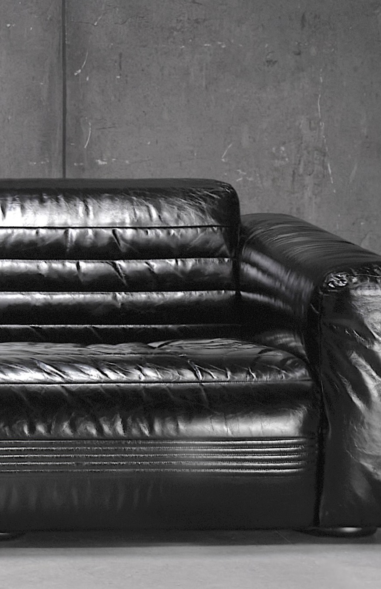
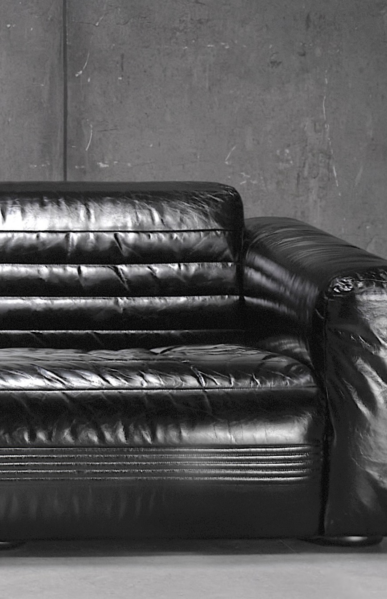
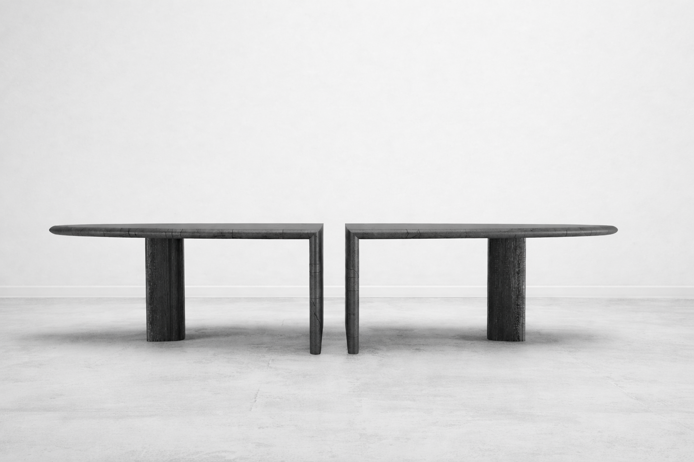
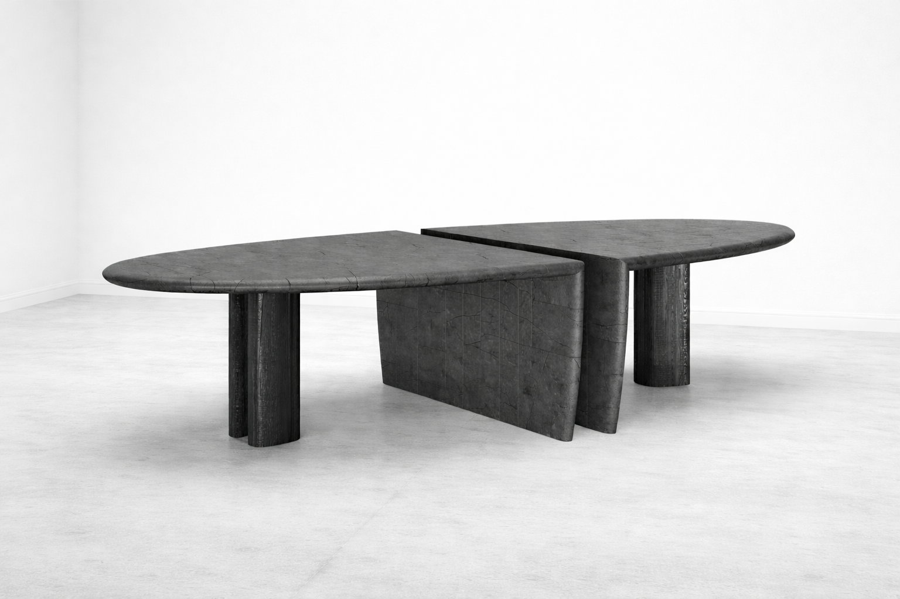
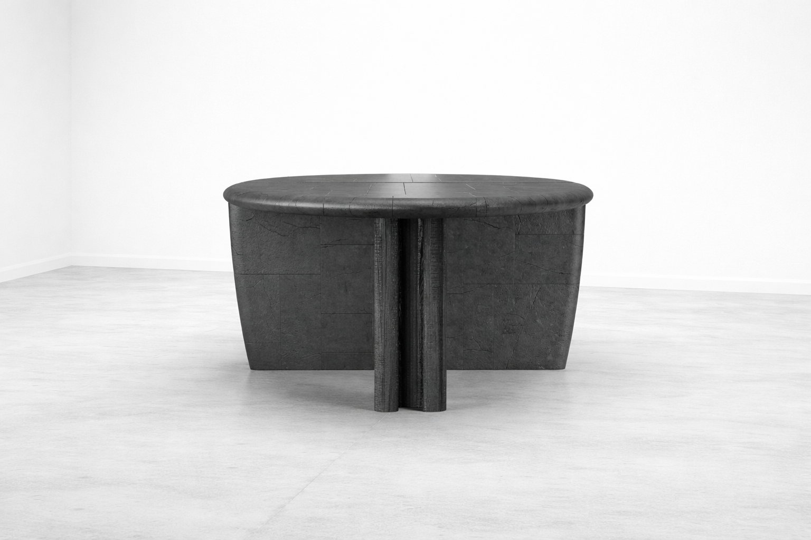
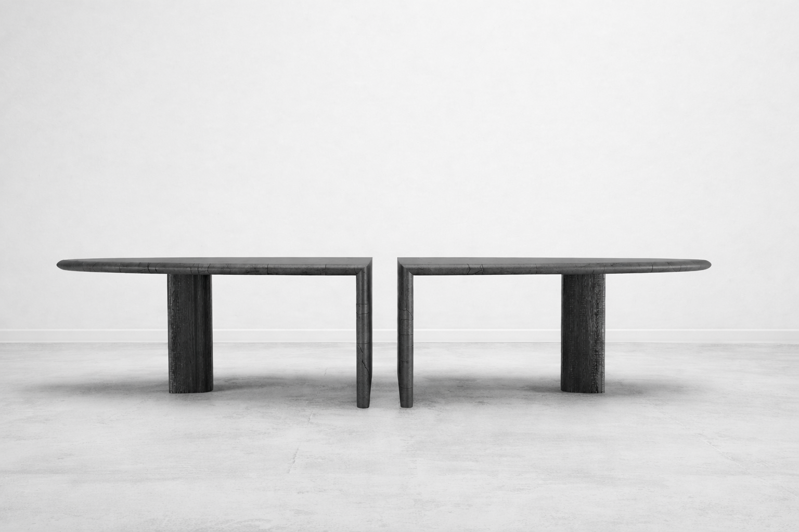
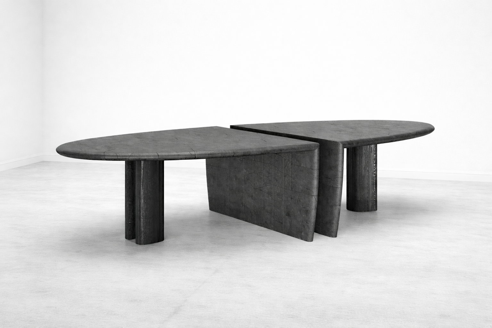
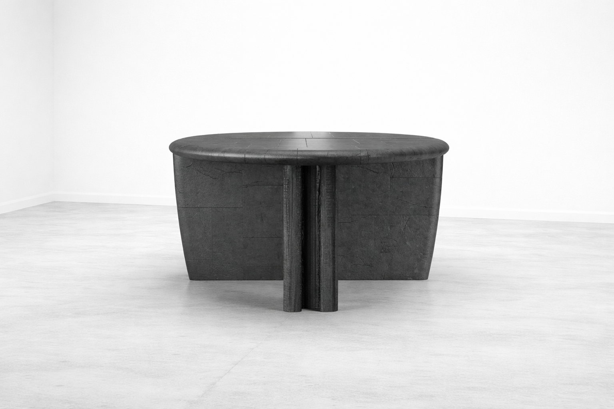

Architecture description here.
 

His design is the expression of a refined eclecticism, in which each object becomes the author of its own individual story, and in which the present serves as the medium through which the past is carried into the future, recreating an aesthetic rooted in memory. From these forms of perfect imperfection—born of an unceasing exploration of materials—has developed an artisanal self-production of objects with a distinctive character, capable of holding aesthetics and ethics together through a virtuous supply chain. This process strengthens the culture of making within a network of historic artisan workshops, restoring centrality to the manufacturing gesture. The zeitgeist of Gio’ is that of a fluid, transversal, and hybrid taste, one that blends with ease, personality, and courage different periods, styles, and references. From each it draws a fragment of meaning, and from their sum it shapes a new vision of the relationship between human beings and objects, living spaces, form, and function.

 




